Three hundred years separate the first glimpse of a bacterium from the first antibiotic. What happened in between was not a series of lucky discoveries but a sequence of arguments — each one killing a belief that had seemed obvious. Read this Part as a chain of reasoning, because the reasoning is what you keep: Koch's postulates are still how we attribute a disease to an organism, and Semmelweis is still why you wash your hands between patients.سیصد سال میان نخستین مشاهدهٔ یک باکتری و نخستین آنتیبیوتیک فاصله است. آنچه در این میان رخ داد مجموعهای از کشفهای شانسی نبود، بلکه توالیای از استدلالها بود — که هر کدام باوری بدیهیبهنظر را از میان برد. این بخش را بهعنوان یک زنجیرهٔ استدلال بخوانید، چون آنچه میماند همان استدلال است: اصول کخ هنوز روشی است که بیماری را به میکروارگانیسم نسبت میدهیم، و زملوایس هنوز دلیل شستن دست میان بیماران است.
By the end of this Part you should be able toدر پایان این بخش باید بتوانید
Explain how Redi and Pasteur disproved spontaneous generation, and why controls were the decisive element in both experiments.توضیح دهید ردی و پاستور چگونه نظریهٔ خلقالساعه را رد کردند و چرا گروه شاهد، عنصر تعیینکننده در هر دو آزمایش بود.
State Koch's four postulates in order and give two situations in which they fail.چهار اصل کخ را بهترتیب بیان کنید و دو موقعیتی را که در آنها شکست میخورند نام ببرید.
Distinguish variolation, attenuated vaccines and inactivated vaccines, with the person and disease attached to each.واریولاسیون، واکسن ضعیفشده و واکسن غیرفعال را با نام فرد و بیماری مربوط به هر کدام تفکیک کنید.
Match each pioneer to the field they founded — a guaranteed MCQ.هر پیشگام را به رشتهای که بنیان گذاشت وصل کنید — یک سؤال چندگزینهای تضمینی.
2.1Spontaneous Generation and Its Defeatنظریهٔ خلقالساعه و شکست آن
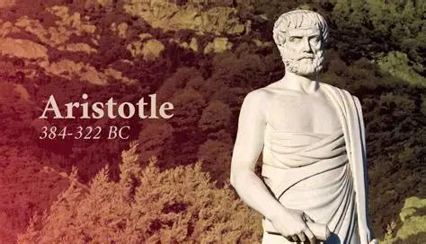
Fig 2.1Aristotle (384–322 BC), who introduced the belief that life arises spontaneously from non-living matter. It went unchallenged for over 2,000 years.ارسطو (۳۸۴–۳۲۲ پیش از میلاد) که این باور را مطرح کرد که حیات خودبهخود از مادهٔ بیجان پدید میآید. این باور بیش از دو هزار سال بیچالش ماند.
Aristotle introduced spontaneous generation — the idea that living things arise from non-living matter. He considered it "readily observable" that aphids arise from the dew which falls on plants, fleas from putrid matter, mice from dirty hay. The belief survived unchallenged for more than 2,000 years, which is itself the lesson: an idea can feel obvious, fit everyday observation, and still be completely wrong.ارسطو نظریهٔ خلقالساعه را مطرح کرد — این ایده که موجودات زنده از مادهٔ بیجان پدید میآیند. بهنظر او «بهروشنی قابلمشاهده» بود که شتهها از شبنمِ روی گیاهان، ککها از مادهٔ گندیده و موشها از کاه کثیف بهوجود میآیند. این باور بیش از دو هزار سال بیچالش ماند، و همین خود درسی است: یک ایده میتواند بدیهی بهنظر برسد، با مشاهدهٔ روزمره جور دربیاید و با این حال کاملاً نادرست باشد.
Francesco Redi (1626–1697) — the power of a controlفرانچسکو ردی — قدرت گروه شاهد
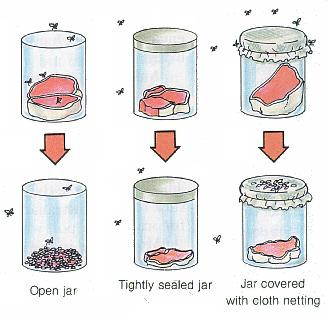
Fig 2.2Redi's experiment. Three jars of meat: open, sealed, and covered with cloth netting. Maggots appeared only in the open jar. The netted jar is the key — air (and therefore any "vital force") still reached the meat, but flies did not. That single control eliminated the alternative explanation and made the result decisive.آزمایش ردی. سه ظرف حاوی گوشت: باز، کاملاً بسته، و پوشیده با توری پارچهای. کرم فقط در ظرف باز ظاهر شد. ظرف توریدار کلید ماجراست — هوا (و بنابراین هر «نیروی حیاتی»ای) همچنان به گوشت میرسید اما مگسها نه. همین یک گروه شاهد، توضیح جایگزین را حذف کرد و نتیجه را قطعی ساخت.
Redi, an Italian physician, asked a deliberately small question: where do maggots come from? The prevailing answer was that rotting meat generated them. He set up jars of meat — one open, one sealed, one covered with cloth netting — and observed which produced maggots.ردی، پزشک ایتالیایی، پرسشی عامدانه کوچک مطرح کرد: کرمهای گوشت از کجا میآیند؟ پاسخ رایج این بود که گوشت در حال فساد آنها را تولید میکند. او ظرفهایی از گوشت آماده کرد — یکی باز، یکی کاملاً بسته، یکی پوشیده با توری — و مشاهده کرد کدام کرم تولید میکند.
Why the netting mattered so much: a sealed jar alone proves nothing, because a defender of spontaneous generation can reply that sealing excluded the air or "vital force" needed for life to form. The netted jar admits air but excludes flies. When the netted meat stayed maggot-free, that objection died. Redi's contribution was not the observation but the control — and that is why the exam asks what process Redi studied: spontaneous generation.چرا توری اینقدر مهم بود: ظرف کاملاً بسته بهتنهایی چیزی اثبات نمیکند، چون مدافع خلقالساعه میتواند پاسخ دهد بستن ظرف، هوا یا «نیروی حیاتی» لازم برای پیدایش حیات را قطع کرده است. ظرف توریدار هوا را راه میدهد اما مگس را نه. وقتی گوشتِ زیر توری بدون کرم ماند، آن ایراد از بین رفت. سهم ردی مشاهده نبود، بلکه گروه شاهد بود — و به همین دلیل امتحان میپرسد ردی چه فرایندی را مطالعه کرد: خلقالساعه.
Antonie van Leeuwenhoek (1632–1723) — the first sightآنتونی فان لیوِنهوک — نخستین مشاهده
Fig 2.3Antonie van Leeuwenhoek, a Dutch draper — not a scientist by training. His trade required him to inspect cloth through magnifying lenses, and that interest in lens-making produced the first practical microscopes.آنتونی فان لیوِنهوک، بزّاز هلندی — نه دانشمندی آموزشدیده. حرفهاش ایجاب میکرد پارچه را با عدسیهای ذرهبینی بررسی کند، و همین علاقه به ساخت عدسی نخستین میکروسکوپهای عملی را پدید آورد.
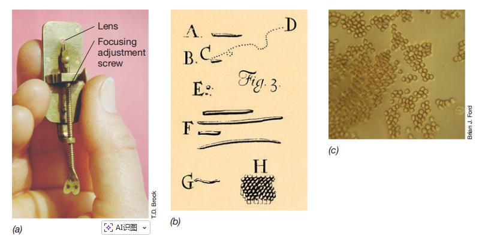
Fig 2.4 His single-lens microscope and his drawings of what he called "animalcules" — the first human sight of bacteria, published to the Royal Society from 1676. He is the grandfather of microbiology.میکروسکوپ تکعدسی او و طرحهایش از آنچه «جانورَک» مینامید — نخستین مشاهدهٔ انسانی باکتری، که از سال ۱۶۷۶ به انجمن سلطنتی گزارش شد. او پدربزرگ میکروبشناسی است.
High-Yieldنکتهٔ کلیدی
Leeuwenhoek was the first person to see bacterial cells with a microscope. This is a near-certain MCQ, and the distractors are always Pasteur, Koch and Snow. Note the distinction in titles the course uses: Leeuwenhoek is the grandfather of microbiology (he saw them), Pasteur the father (he explained them), Koch the founder of modern bacteriology (he proved they cause disease).لیوِنهوک نخستین کسی بود که سلولهای باکتری را با میکروسکوپ دید. این تقریباً حتماً سؤال چندگزینهای میشود و گزینههای انحرافی همیشه پاستور، کخ و اسنو هستند. به تفاوت عناوینی که این درس بهکار میبرد توجه کنید: لیوِنهوک پدربزرگ میکروبشناسی است (آنها را دید)، پاستور پدر (آنها را توضیح داد) و کخ بنیانگذار باکتریشناسی نوین (ثابت کرد بیماری ایجاد میکنند).
Louis Pasteur (1822–1895) — the swan-necked flaskلویی پاستور — فلاسک گردنقویی
Pasteur, a French chemist rather than a physician, delivered the decisive blow. His problem was the same as Redi's but harder: microbes, unlike flies, are invisible and everywhere, so no netting will exclude them.پاستور، یک شیمیدان فرانسوی و نه پزشک، ضربهٔ نهایی را وارد کرد. مسئلهٔ او همان مسئلهٔ ردی بود اما دشوارتر: میکروبها برخلاف مگسها نامرئیاند و همهجا هستند، پس هیچ توریای آنها را حذف نمیکند.
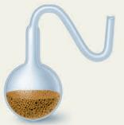
Fig 2.5 The swan-necked flask. The long S-bend is open to the atmosphere at its tip, so air passes freely — but dust and airborne microbes settle in the bend and never reach the broth.فلاسک گردنقویی. خم بلند Sشکل در نوک خود به هوا باز است، پس هوا آزادانه عبور میکند — اما گردوغبار و میکروبهای معلق در خم تهنشین میشوند و هرگز به محیط کشت نمیرسند.
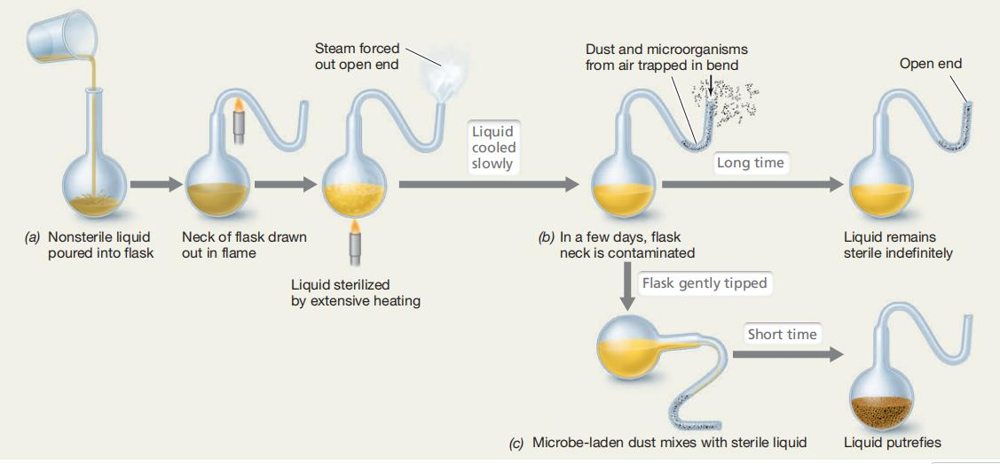
Fig 2.6 The full sequence: broth is boiled (sterilising it), then left open through the swan neck — and stays clear indefinitely. Break or tilt the neck so that the trapped dust reaches the broth, and growth appears within days.توالی کامل: محیط کشت جوشانده میشود (استریل میگردد)، سپس از طریق گردن قویی باز میماند — و بهطور نامحدود شفاف باقی میماند. اگر گردن را بشکنید یا فلاسک را کج کنید تا گردوغبارِ بهدامافتاده به محیط برسد، ظرف چند روز رشد ظاهر میشود.
Mechanism — why the swan neck settled the argumentمکانیسم — چرا گردن قویی بحث را خاتمه داد
Nutrient broth is boiled in the flask, killing every organism present.You must start from a genuinely sterile state, or any later growth could be from survivors rather than newcomers.محیط کشت مغذی درون فلاسک جوشانده میشود و هر موجود موجود را میکشد.باید از حالت واقعاً استریل شروع کنید، وگرنه هر رشد بعدی میتواند از بازماندگان باشد نه واردشوندگان.
The neck is drawn into a long S-shaped bend that remains open to the air at its tip.This is the whole design. It grants the opponent's premise — air, and any hypothetical "vital force" it carries, reaches the broth freely — so the experiment can no longer be dismissed on that ground.گردن بهشکل یک خم بلند Sمانند کشیده میشود که در نوک خود به هوا باز است.تمام طراحی همین است. فرض مخالف را میپذیرد — هوا و هر «نیروی حیاتی» فرضیای که حمل میکند آزادانه به محیط میرسد — پس دیگر نمیتوان آزمایش را با این ایراد رد کرد.
Dust particles and the microbes riding on them settle by gravity in the curve and cannot climb up the far side.Microbes are not gaseous; they travel on particles, and particles obey gravity. The bend is a physical trap that air passes but dust does not.ذرات گردوغبار و میکروبهای سوار بر آنها بر اثر جاذبه در خم تهنشین میشوند و نمیتوانند از سوی دیگر بالا بروند.میکروبها گاز نیستند؛ روی ذرات جابهجا میشوند و ذرات از جاذبه پیروی میکنند. خم، تلهای فیزیکی است که هوا از آن میگذرد اما گردوغبار نه.
The broth stays sterile indefinitely — months, even years.If life arose spontaneously from nutrients plus air, this flask should teem with it. It does not.محیط کشت بهطور نامحدود استریل میماند — ماهها و حتی سالها.اگر حیات خودبهخود از مواد مغذی بهعلاوهٔ هوا پدید میآمد، این فلاسک باید پر از آن میشد. نمیشود.
Break the neck, or tip the flask so broth touches the trapped dust — and growth appears within days.This is the positive control that completes the proof. The broth was always capable of supporting life; it simply had not been seeded. Life comes only from pre-existing life — biogenesis.گردن را بشکنید، یا فلاسک را کج کنید تا محیط با گردوغبار بهدامافتاده تماس پیدا کند — و ظرف چند روز رشد ظاهر میشود.این گروه شاهد مثبتی است که اثبات را کامل میکند. محیط همیشه قادر به حمایت از حیات بود؛ فقط تلقیح نشده بود. حیات تنها از حیاتِ از پیش موجود میآید — زیستزایی.
Spontaneous generation is dead and biogenesis is established. Every sterile technique in every laboratory and operating theatre descends from this one flask.خلقالساعه از میان رفت و زیستزایی تثبیت شد. هر تکنیک استریلی در هر آزمایشگاه و اتاق عملی، از همین یک فلاسک نشأت میگیرد.
Pasteurizationپاستوریزاسیون
Pasteur's commercial problem was wine and beer spoiling. He showed that spoilage organisms could be killed by heat that was not hot enough to evaporate the alcohol — a high temperature for a short time. That compromise is pasteurization: not sterilisation (spores survive), but enough to destroy vegetative pathogens and spoilage organisms while preserving the product. Modern milk pasteurization — 72 °C for 15 seconds — is the same idea, and the reason milk-borne tuberculosis and brucellosis largely vanished from developed countries.مسئلهٔ تجاری پاستور، فساد شراب و آبجو بود. او نشان داد میکروبهای عامل فساد را میتوان با حرارتی کشت که برای تبخیر الکل کافی نیست — دمای بالا برای مدت کوتاه. این مصالحه، پاستوریزاسیون است: نه استریلیزاسیون (هاگها زنده میمانند)، اما کافی برای نابودی بیماریزاهای رویشی و میکروبهای فسادزا با حفظ کیفیت فراورده. پاستوریزهٔ امروزی شیر — ۷۲ درجه برای ۱۵ ثانیه — همان ایده است و دلیل ناپدیدشدن عمدهٔ سل و بروسلوز شیری از کشورهای توسعهیافته.
Exam Trapدام امتحانی
Pasteurization ≠ sterilization. Pasteurization reduces the microbial load and kills vegetative pathogens; sterilization kills everything, including endospores. Only autoclaving (121 °C at 15 psi for 15–20 min), dry heat, or chemical sterilants achieve true sterility. This distinction returns in §4.6 and in Lab 3.پاستوریزاسیون با استریلیزاسیون فرق دارد. پاستوریزاسیون بار میکروبی را کاهش میدهد و بیماریزاهای رویشی را میکشد؛ استریلیزاسیون همه چیز از جمله اندوسپور را میکشد. فقط اتوکلاو (۱۲۱ درجه، ۱۵ پاماسآی، ۱۵ تا ۲۰ دقیقه)، حرارت خشک یا مواد شیمیایی استریلکننده به استریلیتهٔ واقعی میرسند. این تمایز در بخش ۴.۶ و آزمایشگاه ۳ بازمیگردد.
2.2The Birth of Germ Theoryتولد نظریهٔ جرم
Knowing that microbes exist is one thing; proving they cause disease is another. Three physicians made that leap, and notably none of them could see the organism they were arguing about — each reasoned from pattern alone.دانستن اینکه میکروبها وجود دارند یک چیز است؛ اثبات اینکه بیماری ایجاد میکنند چیز دیگری. سه پزشک این جهش را انجام دادند و نکتهٔ قابلتوجه اینکه هیچکدام نمیتوانستند میکروارگانیسمی را که دربارهاش بحث میکردند ببینند — هر سه صرفاً از روی الگو استدلال کردند.
Oliver Wendell Holmes (1809–1894)الیور وندل هولمز
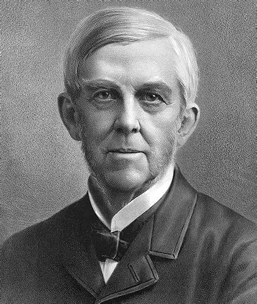
Fig 2.7Oliver Wendell Holmes, American physician. His 1843 paper "The Contagiousness of Puerperal Fever" argued that the disease was carried from patient to patient by the physician.الیور وندل هولمز، پزشک آمریکایی. مقالهٔ ۱۸۴۳ او «واگیرداری تب نفاسی» استدلال میکرد که این بیماری توسط خود پزشک از بیماری به بیمار دیگر منتقل میشود.
Puerperal (childbed) fever is an infection of the female reproductive organs, usually contracted as a result of childbirth or miscarriage. Its mortality was 10–35%. In 1843 Holmes published "The Contagiousness of Puerperal Fever", stating that the disease passes from patient to patient via contact with their physician. He was largely ignored and, in places, ridiculed.تب نفاسی (تب زایمان) عفونت اندامهای تناسلی زن است که معمولاً پس از زایمان یا سقط ایجاد میشود. مرگومیر آن ۱۰ تا ۳۵ درصد بود. هولمز در ۱۸۴۳ مقالهٔ «واگیرداری تب نفاسی» را منتشر کرد و گفت این بیماری از طریق تماس با پزشک از بیماری به بیمار دیگر میرود. او تا حد زیادی نادیده گرفته و جاهایی مسخره شد.
The organism responsible is Streptococcus pyogenesGram + — Group A Streptococcus. The same organism also causes strep throat, scarlet fever, streptococcal pneumonia and necrotizing fasciitis, a range you will meet again in the pyogenic cocci lecture.میکروارگانیسم مسئول Streptococcus pyogenes است — استرپتوکوک گروه A. همین میکروب، گلودرد استرپتوکوکی، مخملک، پنومونی استرپتوکوکی و فاشئیت نکروزان را هم ایجاد میکند؛ دامنهای که در درس کوکسیهای چرکزا دوباره خواهید دید.
Ignaz Semmelweis (1818–1865)ایگناتس زملوایس
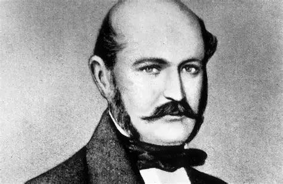
Fig 2.8Ignaz Semmelweis, Hungarian physician working in Vienna.ایگناتس زملوایس، پزشک مجارستانی شاغل در وین.
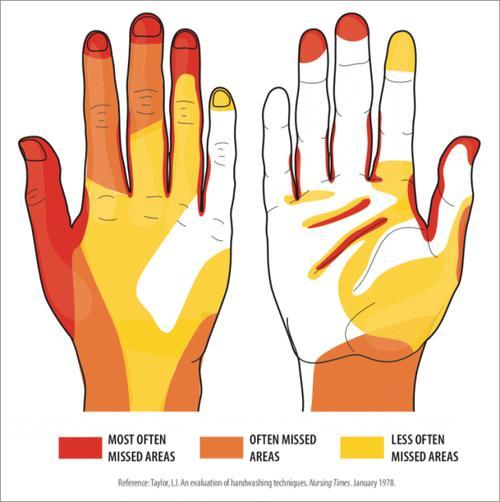
Fig 2.9 Areas most often missed during hand hygiene — fingertips, thumbs and between the fingers. Technique matters as much as frequency.نواحیای که بیش از همه در بهداشت دست از قلم میافتند — نوک انگشتان، شست و بین انگشتان. تکنیک بهاندازهٔ تکرار اهمیت دارد.
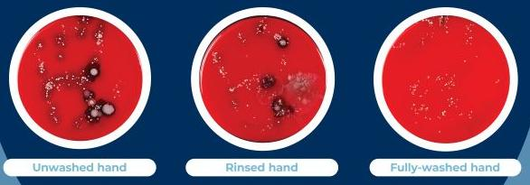
Fig 2.10 Culture plates from an uncleaned hand, a washed hand, and a properly scrubbed hand. The visual argument that Semmelweis could not make in 1847.پلیتهای کشت از دست نشسته، دست شسته و دست بهدرستی اسکرابشده. همان استدلال بصریای که زملوایس در ۱۸۴۷ نمیتوانست ارائه کند.
Mechanism — Semmelweis's reasoning, step by stepمکانیسم — استدلال زملوایس، گام به گام
He observed that the maternity ward staffed by medical students had a far higher death rate from puerperal fever than the ward staffed by midwives.A difference this large between two wards in the same hospital, with the same patients, cannot be explained by the disease itself. Something about the attendants must differ.مشاهده کرد بخش زایمانی که دانشجویان پزشکی در آن کار میکردند مرگومیر تب نفاسی بسیار بالاتری از بخشی داشت که ماماها اداره میکردند.اختلافی به این بزرگی میان دو بخش یک بیمارستان با بیماران یکسان را نمیتوان با خود بیماری توضیح داد. چیزی در مراقبان باید متفاوت باشد.
He identified the one systematic difference: the students performed postmortem examinations before attending deliveries. The midwives did not.This isolates the variable. Everything else — ward, season, patient population — was shared.تنها تفاوت نظاممند را یافت: دانشجویان پیش از حضور بر بالین زایمان، کالبدشکافی انجام میدادند. ماماها نه.این متغیر را جدا میکند. هر چیز دیگری — بخش، فصل، جمعیت بیماران — مشترک بود.
He proposed that "cadaverous material" was being transferred on the students' hands from the dissection room to the birth canal.He had no germ theory and no microscope evidence — he inferred an invisible transmissible agent purely from the epidemiological pattern.پیشنهاد کرد «مادهٔ کادآوری» روی دست دانشجویان از اتاق تشریح به کانال زایمان منتقل میشود.او نه نظریهٔ جرم داشت و نه شواهد میکروسکوپی — صرفاً از روی الگوی اپیدمیولوژیک، عاملی نامرئی و قابلانتقال را استنتاج کرد.
He introduced a policy of handwashing with chlorinated lime between the autopsy room and the ward.Chlorinated lime removes the odour of decomposition — his crude marker for the invisible material. It also happens to be an effective disinfectant, which is why it worked.سیاست شستن دست با آهک کلردار را میان اتاق کالبدشکافی و بخش زایمان برقرار کرد.آهک کلردار بوی تجزیه را میبرد — نشانگر خام او برای آن مادهٔ نامرئی. ضمناً ضدعفونیکنندهٔ مؤثری هم هست و به همین دلیل جواب داد.
Mortality on the students' ward fell dramatically, to match the midwives'.The intervention confirmed the hypothesis. Yet Semmelweis was rejected by his colleagues — he could not explain why it worked, and the claim that doctors were killing their own patients was unwelcome.مرگومیر بخش دانشجویان بهشدت افت کرد و با بخش ماماها برابر شد.مداخله فرضیه را تأیید کرد. با این حال همکارانش او را طرد کردند — نمیتوانست توضیح دهد چرا جواب میدهد، و این ادعا که پزشکان بیماران خود را میکشند خوشایند نبود.
Hand hygiene remains the single most effective measure for preventing healthcare-associated infection. The WHO codifies it as the "Five Moments": before patient care · before an aseptic task · after exposure to blood or body fluids · after patient care · after contact with patient surroundings.بهداشت دست همچنان مؤثرترین اقدام منفرد برای پیشگیری از عفونتهای مرتبط با مراقبت سلامت است. سازمان بهداشت جهانی آن را در قالب «پنج لحظه» تدوین کرده: پیش از مراقبت از بیمار · پیش از اقدام آسپتیک · پس از مواجهه با خون یا مایعات بدن · پس از مراقبت از بیمار · پس از تماس با محیط اطراف بیمار.
John Snow (1813–1858) — the father of epidemiologyجان اسنو — پدر اپیدمیولوژی
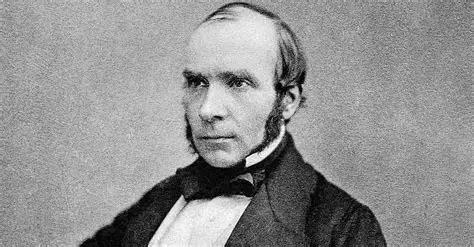
Fig 2.11John Snow, British physician, founder of epidemiology.جان اسنو، پزشک بریتانیایی، بنیانگذار اپیدمیولوژی.
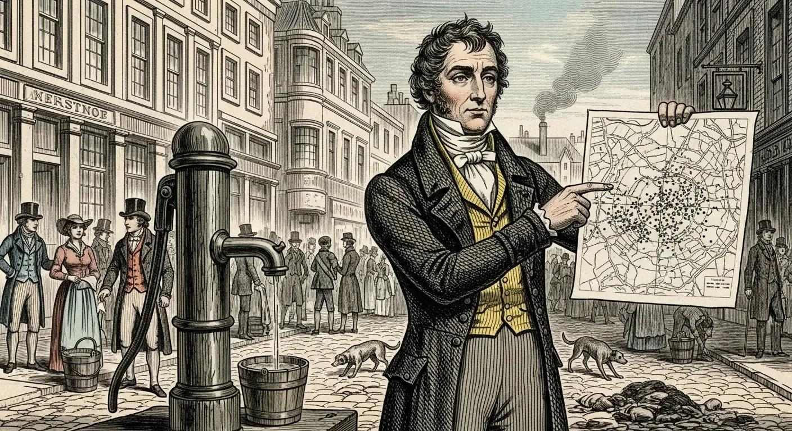
Fig 2.12 The Broad Street pump, London, 1854. Snow mapped cholera deaths, found they clustered around this one pump, and had the handle removed. The outbreak ended.تلمبهٔ خیابان براد، لندن، ۱۸۵۴. اسنو مرگهای وبا را روی نقشه آورد، دید حول همین یک تلمبه خوشهبندی شدهاند و دستهٔ آن را برداشت. اپیدمی پایان یافت.
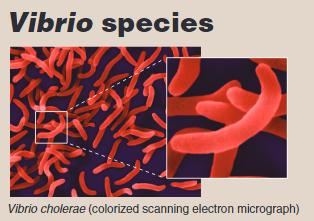
Fig 2.13Vibrio choleraeGram −, colorized scanning electron micrograph. A comma-shaped rod with a single polar flagellum.Vibrio cholerae، میکروگراف الکترونی روبشی رنگیشده. میلهای کاماشکل با یک تاژک قطبی.
In 1854, Snow investigated a cholera outbreak in Soho, London. He mapped every death and traced the cluster to a single water pump on Broad Street. He persuaded the authorities to remove the pump handle, and the outbreak ended. He did this 29 years before Koch isolated Vibrio cholerae — he never saw the organism, and reasoned entirely from the geography of disease. His work drove reform of water and waste systems worldwide.در ۱۸۵۴ اسنو شیوع وبا در محلهٔ سوهوی لندن را بررسی کرد. هر مرگ را روی نقشه ثبت کرد و خوشه را تا یک تلمبهٔ آب در خیابان براد ردیابی نمود. مقامات را متقاعد کرد دستهٔ تلمبه را بردارند و اپیدمی پایان یافت. او این کار را ۲۹ سال پیش از جداسازی Vibrio cholerae توسط کخ انجام داد — هرگز آن میکروارگانیسم را ندید و کاملاً از روی جغرافیای بیماری استدلال کرد. کار او به اصلاح سامانههای آب و فاضلاب در سراسر جهان انجامید.
Clinical Correlation — choleraارتباط بالینی — وبا
Vibrio choleraeGram − causes infectious gastroenteritis. Its enterotoxin damages the mucosal epithelium of the small intestine, producing massive watery diarrhoea ("rice-water stool") and rapid dehydration — patients can lose litres per hour and die of hypovolaemic shock within a day. Transmission is by contaminated water or food, exactly as Snow deduced. It killed tens of millions in 19th- and 20th-century epidemics and still affects 3–5 million people annually, with about 100,000 deaths. The treatment that saves most lives is not an antibiotic but oral rehydration solution.Vibrio cholerae گاستروانتریت عفونی ایجاد میکند. انتروتوکسین آن اپیتلیوم مخاطی رودهٔ باریک را آسیب میزند و اسهال آبکی شدید («مدفوع آب برنجی») و دهیدراتاسیون سریع پدید میآورد — بیماران میتوانند ساعتی چند لیتر از دست بدهند و ظرف یک روز از شوک هیپوولمیک بمیرند. انتقال از راه آب یا غذای آلوده است، دقیقاً همانطور که اسنو استنتاج کرد. در اپیدمیهای قرن نوزدهم و بیستم دهها میلیون نفر را کشت و هنوز سالانه ۳ تا ۵ میلیون نفر را درگیر میکند با حدود ۱۰۰٬۰۰۰ مرگ. درمانی که بیشترین جانها را نجات میدهد آنتیبیوتیک نیست، بلکه محلول خوراکی آبرسانی است.
2.3Koch's Postulates — and Where They Breakاصول کخ — و جایی که شکست میخورند
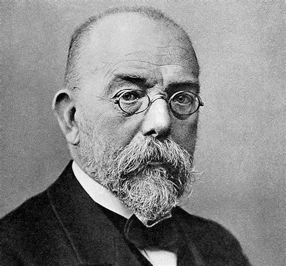
Fig 2.14Robert Koch (1843–1910), German physician, founder of modern bacteriology. He identified the causative agents of anthrax, tuberculosis and cholera, and introduced agar and the Petri dish for purifying colonies — techniques you will use in every lab session of this course.روبرت کخ (۱۸۴۳–۱۹۱۰)، پزشک آلمانی، بنیانگذار باکتریشناسی نوین. عوامل سیاهزخم، سل و وبا را شناسایی کرد و آگار و پلیت پتری را برای خالصسازی کلنیها معرفی نمود — تکنیکهایی که در هر جلسهٔ آزمایشگاه این درس بهکار خواهید برد.
Koch supplied what Holmes, Semmelweis and Snow lacked: a formal method for proving that a particular organism causes a particular disease. Before this, "germs cause disease" was a hypothesis; after it, causation became demonstrable one organism at a time.کخ چیزی را فراهم کرد که هولمز، زملوایس و اسنو نداشتند: یک روش رسمی برای اثبات اینکه یک میکروارگانیسم مشخص باعث یک بیماری مشخص میشود. پیش از آن «میکروبها بیماری ایجاد میکنند» یک فرضیه بود؛ پس از آن، علیت یکییکی برای هر میکروارگانیسم قابلاثبات شد.
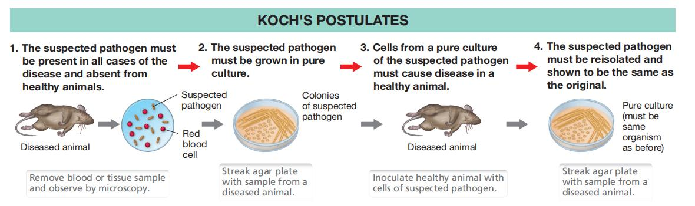
Fig 2.15 Koch's postulates as a closed loop: isolate from the diseased animal → grow in pure culture → inoculate a healthy animal → recover the same organism from the newly diseased animal. The loop closing is the proof.اصول کخ بهصورت یک حلقهٔ بسته: جداسازی از حیوان بیمار ← رشد در کشت خالص ← تلقیح به حیوان سالم ← بازیابی همان میکروارگانیسم از حیوان تازهبیمارشده. بستهشدن این حلقه، همان اثبات است.
The four postulates — and why each is necessaryچهار اصل — و ضرورت هر کدام
The same microorganism must be present in every case of the disease.If the organism is absent from even one genuine case, it cannot be the necessary cause. This is the screening step.همان میکروارگانیسم باید در هر مورد از بیماری حضور داشته باشد.اگر آن میکروارگانیسم حتی در یک مورد واقعی غایب باشد، نمیتواند علت ضروری باشد. این گام غربالگری است.
The microorganism must be isolated from the diseased host and grown in pure culture."Pure" is the load-bearing word. A mixed culture proves nothing, because any of several organisms present could be the culprit. This is exactly why Koch had to invent solid agar media and the Petri dish first — a liquid culture cannot be separated into single colonies.میکروارگانیسم باید از میزبان بیمار جدا و در کشت خالص رشد داده شود.واژهٔ «خالص» وزن اصلی را دارد. کشت مخلوط چیزی اثبات نمیکند، چون هر یک از چند میکروارگانیسم حاضر میتواند مقصر باشد. دقیقاً به همین دلیل کخ ابتدا مجبور شد محیط جامد آگار و پلیت پتری را اختراع کند — کشت مایع را نمیتوان به کلنیهای منفرد تفکیک کرد.
The pure-cultured organism must cause the same disease when inoculated into a healthy, susceptible animal.This converts correlation into causation. Presence alone could be coincidence or consequence; reproducing the disease from a pure culture makes the organism sufficient.میکروارگانیسم کشتخالصشده باید با تلقیح به حیوان سالم و مستعد، همان بیماری را ایجاد کند.این، همبستگی را به علیت تبدیل میکند. صرفِ حضور میتواند تصادفی یا پیامد باشد؛ بازتولید بیماری از کشت خالص، میکروارگانیسم را کافی میسازد.
The organism must be re-isolated from the experimentally infected animal and shown to be identical to the original.This closes the loop and excludes contamination — it proves the disease was caused by the organism you inoculated, not by something introduced during the procedure.میکروارگانیسم باید از حیوان آلودهشدهٔ آزمایشی دوباره جدا و هویت آن با نمونهٔ اولیه یکسان نشان داده شود.این حلقه را میبندد و آلودگی را حذف میکند — ثابت میکند بیماری از میکروارگانیسم تلقیحشده ناشی شده، نه از چیزی که حین کار وارد شده باشد.
Exam Trap — the MCQ they always askدام امتحانی — سؤالی که همیشه میپرسند
"Which statement is NOT part of Koch's postulates?" The answer is always the one claiming the organism can be identified from a mixed culture. Postulate 2 requires a pure culture — that is the entire point, and the reason Koch had to invent agar plates before he could invent the postulates.«کدام جمله جزو اصول کخ نیست؟» پاسخ همیشه گزینهای است که میگوید میکروارگانیسم را میتوان از کشت مخلوط شناسایی کرد. اصل دوم، کشت خالص میخواهد — تمام مطلب همین است و دلیل آنکه کخ پیش از ابداع این اصول، مجبور شد پلیت آگار را اختراع کند.
Where the postulates failجایی که این اصول شکست میخورند
The postulates were formulated for culturable bacteria in the 1880s, and modern microbiology has found their limits. Knowing these exceptions is what separates a memorised answer from an understood one:این اصول در دههٔ ۱۸۸۰ برای باکتریهای قابلکشت تدوین شدند و میکروبشناسی نوین محدودیتهایشان را یافته است. دانستن این استثناها، پاسخ حفظی را از پاسخ فهمیدهشده جدا میکند:
Some organisms cannot be grown in pure culture.Mycobacterium lepraeAcid-fast and Treponema pallidumGram − have never been cultured on artificial media; all viruses require living cells. Postulate 2 fails outright.برخی میکروارگانیسمها را نمیتوان در کشت خالص رشد داد.Mycobacterium leprae و Treponema pallidum هرگز در محیط مصنوعی کشت نشدهاند؛ همهٔ ویروسها به سلول زنده نیاز دارند. اصل دوم مستقیماً شکست میخورد.
Asymptomatic carriers exist. Many healthy people carry Neisseria meningitidisGram − or S. aureusGram + without disease, so the organism's presence is not sufficient — host factors matter.ناقلان بدون علامت وجود دارند. بسیاری از افراد سالم Neisseria meningitidis یا S. aureus را بدون بیماری حمل میکنند، پس حضور میکروارگانیسم کافی نیست — عوامل میزبان اهمیت دارند.
No suitable animal model. Some human pathogens infect no other species, so postulate 3 cannot be tested ethically or practically.مدل حیوانی مناسب وجود ندارد. برخی بیماریزاهای انسانی هیچ گونهٔ دیگری را آلوده نمیکنند، پس اصل سوم از نظر اخلاقی یا عملی قابلآزمون نیست.
One organism, many diseases; one disease, many organisms.S. aureus causes boils, endocarditis, osteomyelitis and toxic shock; pneumonia is caused by dozens of different species.یک میکروارگانیسم، چند بیماری؛ یک بیماری، چند میکروارگانیسم.S. aureus کورک، اندوکاردیت، استئومیلیت و شوک سمی ایجاد میکند؛ پنومونی را دهها گونهٔ مختلف میسازند.
Polymicrobial and microbiome-associated disease. Periodontitis and bacterial vaginosis arise from community shifts, not a single agent.بیماریهای چندمیکروبی و مرتبط با میکروبیوم. پریودنتیت و واژینوز باکتریال از تغییر ترکیب جامعهٔ میکروبی ناشی میشوند نه از یک عامل واحد.
Molecular Koch's postulates (Falkow, 1988) update the logic for the genomic era: the gene associated with virulence should be present in pathogenic strains and absent from avirulent ones; inactivating it should abolish virulence; and restoring it should restore virulence. Same reasoning, applied to a gene instead of an organism.اصول مولکولی کخ (فالکو، ۱۹۸۸) همین منطق را برای عصر ژنومی بهروز میکنند: ژنِ مرتبط با حدت باید در سویههای بیماریزا حاضر و در سویههای بیحدت غایب باشد؛ غیرفعالکردن آن باید حدت را از بین ببرد؛ و بازگرداندن آن باید حدت را برگرداند. همان استدلال، اما دربارهٔ یک ژن بهجای یک میکروارگانیسم.
Clinical Correlation — anthrax, the organism Koch proved it onارتباط بالینی — سیاهزخم، میکروارگانیسمی که کخ روی آن اثبات کرد
Bacillus anthracisGram + is a large spore-forming rod common in soil. Three clinical forms follow the route of entry: cutaneous (through a skin lesion — a painless black eschar), gastrointestinal (eating infected meat), and pulmonary/inhalational (the most lethal, with haemorrhagic mediastinitis). Its endospores survive for centuries, which is what makes it both a persistent agricultural problem and a biological weapon. Pasteur developed the first anthrax vaccine; Koch used it to prove the postulates. You will meet its spores again in §4.6.Bacillus anthracis باسیل بزرگ هاگسازی است که در خاک فراوان است. سه شکل بالینی، تابع مسیر ورود است: جلدی (از راه ضایعهٔ پوستی — اسکار سیاه بدون درد)، گوارشی (خوردن گوشت آلوده) و ریوی/استنشاقی (کشندهترین، با مدیاستینیت هموراژیک). اندوسپورهای آن قرنها زنده میمانند و همین، هم آن را مشکلی پایدار در کشاورزی و هم سلاحی بیولوژیک کرده است. پاستور نخستین واکسن سیاهزخم را ساخت؛ کخ از آن برای اثبات اصول خود استفاده کرد. هاگهای آن را در بخش ۴.۶ دوباره خواهید دید.
2.4Vaccination — Variolation to Modern Vaccinesواکسیناسیون — از واریولاسیون تا واکسنهای نوین
Smallpox and variolationآبله و واریولاسیون
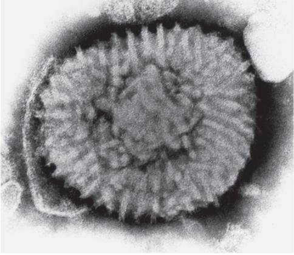
Fig 2.16Variola virus, electron micrograph. Smallpox caused 300–500 million deaths in the 20th century alone, with a 30–35% mortality rate.ویروس آبله، میکروگراف الکترونی. آبله تنها در قرن بیستم ۳۰۰ تا ۵۰۰ میلیون مرگ با مرگومیر ۳۰ تا ۳۵ درصد ایجاد کرد.
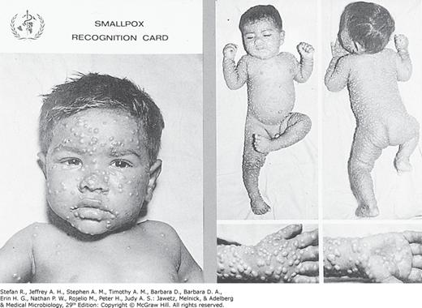
Fig 2.17 WHO smallpox recognition card. Survivors were commonly left with disfiguring scars and blindness.کارت شناسایی آبلهٔ سازمان بهداشت جهانی. بازماندگان معمولاً دچار اسکارهای بدشکلکننده و نابینایی میشدند.
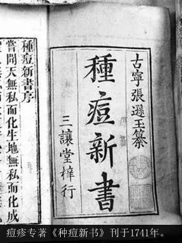
Fig 2.18 Chinese text on inoculation. Variolation was developed in the Song dynasty and well established by the Ming and Qing — centuries before Jenner.متن چینی دربارهٔ تلقیح. واریولاسیون در سلسلهٔ سونگ توسعه یافت و در دوران مینگ و چینگ کاملاً جا افتاد — قرنها پیش از جنر.
Definitionتعریف
Variolation is deliberate inoculation with material from a smallpox lesion — dried scabs or vesicle fluid — placed into the nostril or under the skin, in the hope of producing mild disease and lasting immunity. Vaccination (from vacca, cow) uses a different, milder organism to induce cross-protective immunity.واریولاسیون یعنی تلقیح عمدی مادهٔ گرفتهشده از ضایعهٔ آبله — دلمهٔ خشک یا مایع وزیکول — در سوراخ بینی یا زیر پوست، به امید ایجاد بیماری خفیف و ایمنی پایدار. واکسیناسیون (از واژهٔ vacca بهمعنای گاو) از میکروارگانیسمی متفاوت و ملایمتر برای ایجاد ایمنی متقاطع استفاده میکند.
The Chinese technique transferred patients' pox vesicle fluid or crusts to a child's naris. Success depended heavily on the physician's skill, and the practice carried real mortality — but far less than natural smallpox. It reached Russia in 1688, then Turkey and Britain.روش چینی، مایع وزیکول یا دلمهٔ بیماران را به سوراخ بینی کودک منتقل میکرد. موفقیت بهشدت به مهارت پزشک بستگی داشت و این کار مرگومیر واقعی داشت — اما بسیار کمتر از آبلهٔ طبیعی. این روش در ۱۶۸۸ به روسیه و سپس به ترکیه و بریتانیا رسید.
Edward Jenner (1749–1823) — the father of immunologyادوارد جنر — پدر ایمنیشناسی
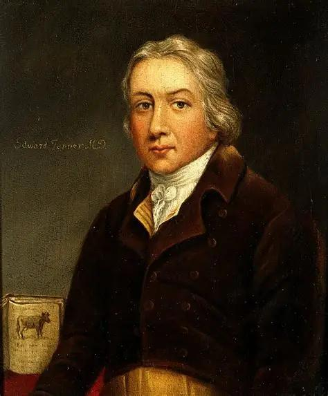
Fig 2.19Edward Jenner, British physician. At the time, an estimated 20% of the population died of smallpox.ادوارد جنر، پزشک بریتانیایی. در آن زمان تخمین زده میشد ۲۰ درصد جمعیت بر اثر آبله میمیرند.
Jenner was aware of a belief among farm workers: if you had caught cowpox, you would not get smallpox. He tested it by inoculating cowpox — which causes only mild symptoms — and demonstrating protection against smallpox. The conceptual leap is that a different, related organism can teach the immune system without the danger of the real pathogen.جنر از باوری میان کارگران مزرعه آگاه بود: اگر آبلهٔ گاوی گرفته باشی، آبله نمیگیری. او این را با تلقیح آبلهٔ گاوی — که فقط علائم خفیف ایجاد میکند — آزمود و محافظت در برابر آبله را نشان داد. جهش مفهومی این است که میکروارگانیسمی متفاوت اما خویشاوند میتواند به سیستم ایمنی آموزش دهد بدون خطر بیماریزای واقعی.
The payoff: through a worldwide vaccination programme, the WHO declared smallpox eradicated in 1979 — the only human infectious disease ever eliminated from the planet.نتیجه: با یک برنامهٔ جهانی واکسیناسیون، سازمان بهداشت جهانی در ۱۹۷۹ ریشهکنی آبله را اعلام کرد — تنها بیماری عفونی انسانی که تاکنون از روی کرهٔ زمین حذف شده است.
Pasteur and the two classes of vaccineپاستور و دو ردهٔ واکسن
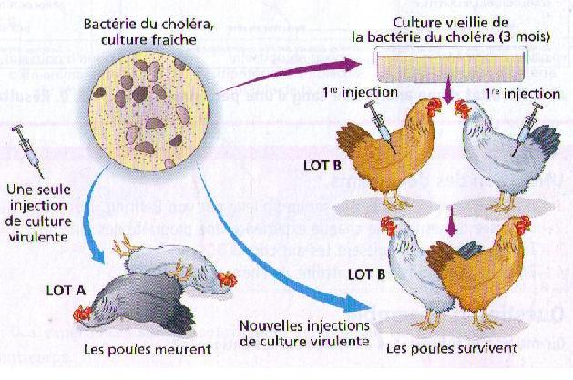
Fig 2.20 The chicken cholera experiment. Fresh culture kills; old (attenuated) culture does not — and the survivors are then immune to fresh culture. The discovery was an accident: an assistant's neglect left cultures to age over a holiday.آزمایش وبای مرغ. کشت تازه میکشد؛ کشت کهنه (ضعیفشده) نمیکشد — و بازماندگان سپس در برابر کشت تازه ایمناند. این کشف تصادفی بود: بیتوجهی یک دستیار باعث شد کشتها در تعطیلات کهنه شوند.
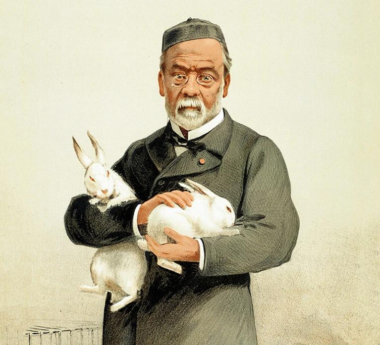
Fig 2.21 Pasteur and the rabbits used to produce rabies vaccine. He desiccated the spinal cords of infected rabbits until the preparation became almost non-virulent — the first inactivated vaccine.پاستور و خرگوشهایی که برای ساخت واکسن هاری استفاده شدند. او نخاع خرگوشهای آلوده را خشک میکرد تا فراورده تقریباً بیحدت شود — نخستین واکسن غیرفعال.
Mechanism — how attenuation was discovered, and why it worksمکانیسم — چگونه ضعیفسازی کشف شد و چرا کار میکند
Pasteur was working on chicken cholera using fresh cultures, which reliably killed the birds.A fresh culture is full of fully virulent organisms, so it reproduces the disease exactly.پاستور روی وبای مرغ با کشتهای تازه کار میکرد که بهطور قابلاعتماد پرندگان را میکشتند.کشت تازه پر از میکروارگانیسمهای کاملاً حدتدار است، پس بیماری را دقیقاً بازتولید میکند.
Through an assistant's neglect, old cultures were used instead.The accident is the point — this was not a planned experiment, and Pasteur's contribution was recognising what the failure meant.بر اثر بیتوجهی یک دستیار، بهجای آنها از کشتهای کهنه استفاده شد.همین تصادف مهم است — این آزمایشی برنامهریزیشده نبود و سهم پاستور در تشخیص معنای آن شکست بود.
The chickens fell ill but recovered. The bacteria had become weakened (attenuated) during prolonged storage.Repeated subculture or ageing outside the host selects for variants adapted to laboratory conditions rather than to invading tissue; virulence genes are lost or downregulated.مرغها بیمار شدند اما بهبود یافتند. باکتریها طی نگهداری طولانی ضعیف (تخفیفحدتیافته) شده بودند.کشت مکرر یا کهنهشدن در خارج از میزبان، واریانتهای سازگار با شرایط آزمایشگاه را انتخاب میکند نه سازگار با تهاجم به بافت؛ ژنهای حدت از دست میروند یا کمبیان میشوند.
When those same recovered chickens were later given fresh, fully virulent culture, they survived.The attenuated organism still carried the same surface antigens, so the immune system had already built memory B and T cells against them. Antigenic identity is preserved while virulence is lost — that is the entire principle of a live attenuated vaccine.وقتی همان مرغهای بهبودیافته بعداً کشت تازه و کاملاً حدتدار دریافت کردند، زنده ماندند.میکروارگانیسم ضعیفشده همان آنتیژنهای سطحی را داشت، پس سیستم ایمنی از پیش سلولهای خاطرهٔ B و T علیه آنها ساخته بود. هویت آنتیژنی حفظ و حدت حذف میشود — تمام اصل واکسن زندهٔ ضعیفشده همین است.
Pasteur named these artificially weakened pathogens "vaccines" (1879), in deliberate homage to Jenner's cowpox.He generalised a one-off observation about cowpox into a manufacturable principle applicable to any organism — and went on to apply it to anthrax and rabies.پاستور این بیماریزاهای مصنوعاً ضعیفشده را «واکسن» (۱۸۷۹) نامید، عامدانه به احترام آبلهٔ گاوی جنر.او یک مشاهدهٔ منفرد دربارهٔ آبلهٔ گاوی را به اصلی قابلتولید و قابلاعمال بر هر میکروارگانیسمی تعمیم داد — و سپس آن را بر سیاهزخم و هاری بهکار بست.
Two classes of vaccine, both from Pasteur: live attenuated (weakened but alive — chicken cholera, anthrax) and inactivated/killed (rabies, made by desiccating infected spinal cord).دو ردهٔ واکسن، هر دو از پاستور: زندهٔ ضعیفشده (ضعیف اما زنده — وبای مرغ، سیاهزخم) و غیرفعال/کشتهشده (هاری، با خشککردن نخاع آلوده).
Clinical Correlation — rabies and post-exposure prophylaxisارتباط بالینی — هاری و پروفیلاکسی پس از مواجهه
Rabies is a viral infection of the brain caused by lyssaviruses, generally transmitted by bites from infected dogs or bats. It is almost 100% fatal once symptoms begin — but preventable if vaccine or immunoglobulin is given within about 10 days of exposure. That narrow window exists because the virus travels slowly up peripheral nerves to the CNS, and vaccination can outrun it. In 1885 Pasteur vaccinated Joseph Meister, a nine-year-old bitten by a rabid dog; the boy lived, and hundreds of bite victims worldwide were saved subsequently. Rabies still causes 26,000–55,000 deaths per year.هاری عفونت ویروسی مغز است که توسط لیساویروسها ایجاد میشود و عمدتاً با گاز گرفتن سگ یا خفاش آلوده منتقل میگردد. پس از شروع علائم تقریباً صددرصد کشنده است — اما اگر واکسن یا ایمونوگلوبولین ظرف حدود ۱۰ روز پس از مواجهه داده شود قابلپیشگیری است. این پنجرهٔ باریک از آنجا میآید که ویروس بهآرامی از اعصاب محیطی به سیستم عصبی مرکزی میرود و واکسیناسیون میتواند از آن جلو بزند. در ۱۸۸۵ پاستور ژوزف مایستر، پسری نهساله را که سگ هار گاز گرفته بود واکسینه کرد؛ پسر زنده ماند و پس از آن صدها قربانی گازگرفتگی در جهان نجات یافتند. هاری هنوز سالانه ۲۶٬۰۰۰ تا ۵۵٬۰۰۰ مرگ ایجاد میکند.
2.5Antisepsis and the First Antimicrobialsضدعفونی و نخستین ضدمیکروبیها
Joseph Lister (1827–1912) — antiseptic surgeryجوزف لیستر — جراحی آنتیسپتیک
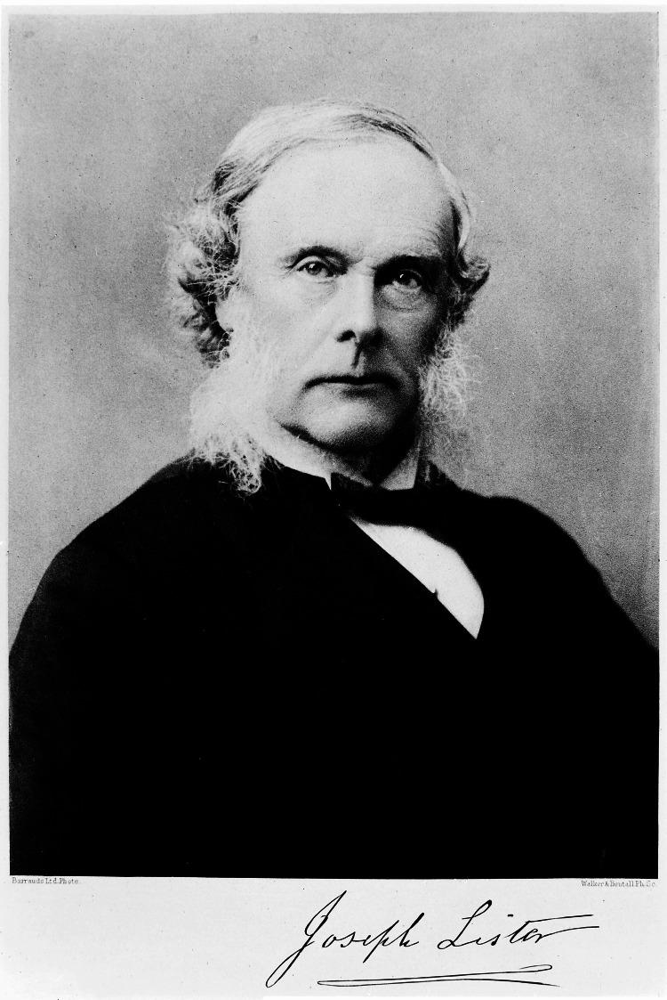
Fig 2.22Joseph Lister, British surgeon, father of modern surgery. Listerine mouthwash is named after him — though he did not invent it.جوزف لیستر، جراح بریتانیایی، پدر جراحی نوین. دهانشویهٔ لیسترین به نام او نامگذاری شده، هرچند خودش آن را اختراع نکرد.
Gangrene and wound rotting were the dominant problem of surgery — operations frequently succeeded technically and then killed the patient by sepsis. Lister heard of Pasteur's work and reasoned that if microbes in the air spoil broth, microbes entering a wound must spoil tissue in the same way. He introduced carbolic acid (phenol) to clean wounds and sterilise instruments, and mortality in his wards collapsed.گانگرن و پوسیدگی زخم مشکل غالب جراحی بودند — اعمال جراحی اغلب از نظر فنی موفق بودند و سپس بیمار را با سپسیس میکشتند. لیستر از کار پاستور باخبر شد و استدلال کرد اگر میکروبهای هوا محیط کشت را فاسد میکنند، میکروبهایی که وارد زخم میشوند نیز باید بافت را به همان شکل فاسد کنند. او اسید کربولیک (فنل) را برای شستوشوی زخم و استریلکردن ابزار معرفی کرد و مرگومیر بخشهایش بهشدت افت کرد.
Lab Pearl — three words that are not synonymsنکتهٔ آزمایشگاهی — سه واژه که مترادف نیستند
Antisepsis — killing or inhibiting microbes on living tissue (skin prep, hand rub). Disinfection — the same on inanimate surfaces, killing vegetative organisms but not necessarily spores. Sterilisation — destruction of all microbial life including endospores. Lister introduced antisepsis; Koch's autoclave gave sterilisation. Exams exploit the overlap relentlessly, and Lab 3 of this course is built on the distinction.آنتیسپسیس — کشتن یا مهار میکروبها روی بافت زنده (آمادهسازی پوست، محلول دست). ضدعفونی — همان کار روی سطوح بیجان، که میکروبهای رویشی را میکشد اما لزوماً هاگها را نه. استریلیزاسیون — نابودی تمام حیات میکروبی از جمله اندوسپور. لیستر آنتیسپسیس را معرفی کرد؛ اتوکلاو کخ استریلیزاسیون را. امتحانها بیرحمانه از همپوشانی این سه سوءاستفاده میکنند و آزمایشگاه ۳ این درس بر همین تمایز بنا شده است.
Paul Ehrlich (1854–1915) — the magic bulletپاول ارلیش — گلولهٔ جادویی
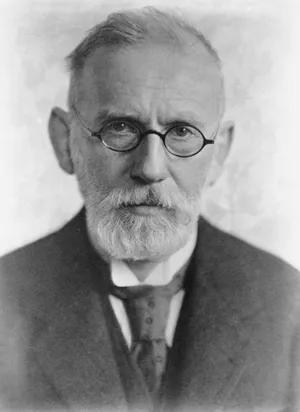
Fig 2.23Paul Ehrlich, German scientist, who initiated and named the concept of chemotherapy.پاول ارلیش، دانشمند آلمانی که مفهوم شیمیدرمانی را آغاز و نامگذاری کرد.
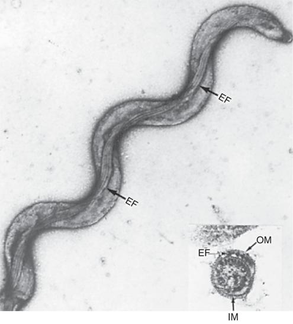
Fig 2.24Treponema pallidumGram −, the spirochaete causing syphilis. Too thin to be seen on Gram stain — it requires dark-field microscopy or silver stain.Treponema pallidum، اسپیروکت عامل سیفلیس. آنقدر نازک است که در رنگآمیزی گرم دیده نمیشود — به میکروسکوپ زمینهتاریک یا رنگآمیزی نقره نیاز دارد.
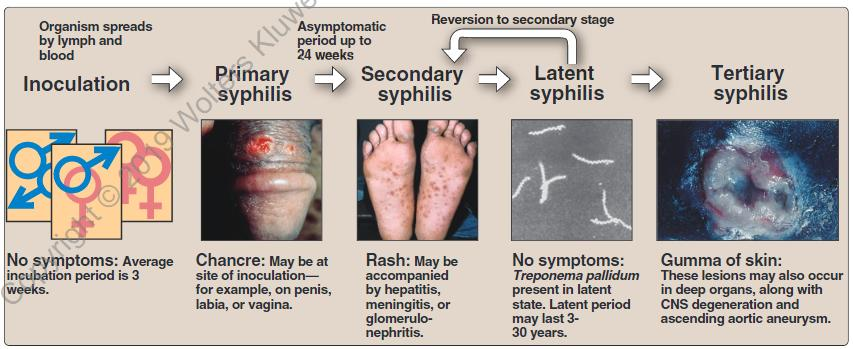
Fig 2.25 Syphilis develops in distinct stages — primary chancre, secondary rash, latency, tertiary disease — separated by symptom-free intervals.سیفلیس در مراحل مجزا پیش میرود — شانکر اولیه، بثورات ثانویه، نهفتگی، بیماری ثالثیه — که با فواصل بدون علامت از هم جدا میشوند.
Ehrlich's idea was that a chemical could be found which binds a parasite selectively and spares the host — a "magic bullet". His laboratory synthesised Arsphenamine (Salvarsan, compound 606), the first effective medical treatment for syphilis. It was very unstable and oxygen-sensitive, and was later replaced by penicillin.ایدهٔ ارلیش این بود که میتوان مادهای شیمیایی یافت که بهصورت انتخابی به انگل متصل شود و میزبان را در امان بگذارد — یک «گلولهٔ جادویی». آزمایشگاه او آرسفنامین (سالوارسان، ترکیب ۶۰۶) را ساخت که نخستین درمان مؤثر پزشکی برای سیفلیس بود. این ماده بسیار ناپایدار و حساس به اکسیژن بود و بعدها جای خود را به پنیسیلین داد.
Gerhard Domagk (1895–1964) — sulfonamidesگرهارد دوماگ — سولفونامیدها
Domagk discovered that the sulfanilamide portion of the dye Prontosil was effective against bacteria. Sulfanilamide was later largely replaced by penicillin, but the chemical lineage mattered enormously: it led on to the antituberculous drugs thiosemicarbazone and isoniazid.دوماگ کشف کرد که بخش سولفانیلامید رنگ پرونتوزیل علیه باکتریها مؤثر است. سولفانیلامید بعدها عمدتاً با پنیسیلین جایگزین شد، اما این تبار شیمیایی بسیار مهم بود: به داروهای ضدسل تیوسمیکاربازون و ایزونیازید انجامید.
Mycobacterium tuberculosisAcid-fast infects an estimated one third of the world's population. It is typically a lung disease but can affect almost any organ. During the latent stage it sits encapsulated and dormant within a granuloma, then reactivates when immunity falls — which is why HIV co-infection is so devastating and why latent TB is screened for before immunosuppressive therapy.Mycobacterium tuberculosis تخمیناً یکسوم جمعیت جهان را آلوده کرده است. معمولاً بیماری ریوی است اما میتواند تقریباً هر عضوی را درگیر کند. در مرحلهٔ نهفته درون گرانولوم محصور و خاموش میماند و سپس با افت ایمنی فعال میشود — به همین دلیل همعفونتی با HIV اینقدر ویرانگر است و به همین دلیل پیش از درمان سرکوبکنندهٔ ایمنی، سل نهفته غربالگری میشود.
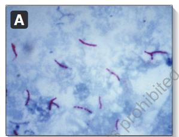
Fig 2.26Ziehl–Neelsen acid-fast stain: M. tuberculosis appears as slender red bacilli against a blue background. A Gram stain would show almost nothing — see §3.9.رنگآمیزی اسیدفست زیل–نیلسن: M. tuberculosis بهصورت باسیلهای باریک قرمز بر زمینهٔ آبی دیده میشود. رنگآمیزی گرم تقریباً چیزی نشان نمیدهد — بخش ۳.۹.
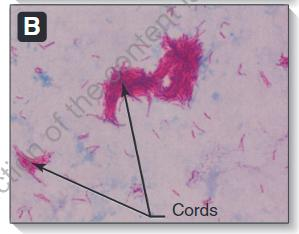
Fig 2.27Cord formation — the parallel "serpentine cords" of M. tuberculosis, caused by cord factor (trehalose dimycolate), a virulence factor of the cell wall.تشکیل کورد — «طنابهای مارپیچ» موازی M. tuberculosis که از فاکتور کورد (ترهالوز دیمایکولات)، یکی از عوامل حدت دیوارهٔ سلولی، ناشی میشود.
Fleming, Florey and Chain — penicillinفلمینگ، فلوری و چِین — پنیسیلین
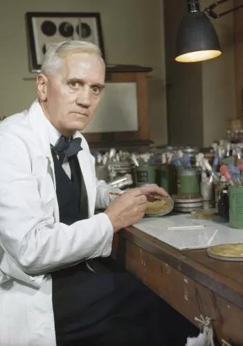
Fig 2.28Alexander Fleming, Scottish bacteriologist, in his laboratory.الکساندر فلمینگ، باکتریشناس اسکاتلندی، در آزمایشگاهش.
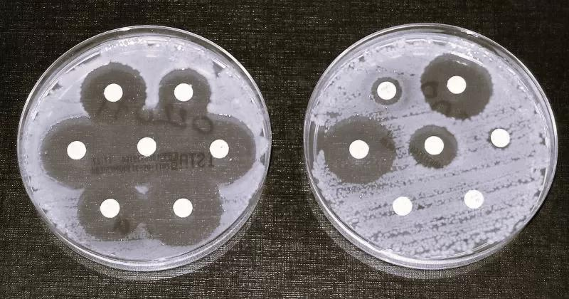
Fig 2.29 Disk diffusion susceptibility testing — the descendant of Fleming's observation. Clear zones of inhibition around a disk mean the organism is susceptible to that drug.آزمون حساسیت با انتشار دیسک — فرزند مشاهدهٔ فلمینگ. هالهٔ شفاف مهار اطراف دیسک یعنی میکروارگانیسم به آن دارو حساس است.
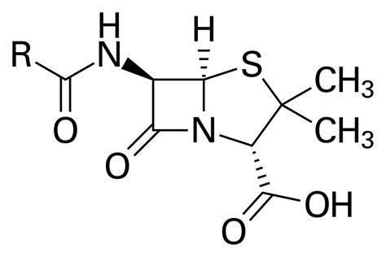
Fig 2.30 The penicillin nucleus, with its β-lactam ring — the four-membered ring that attacks peptidoglycan cross-linking, and the bond that β-lactamase enzymes cleave.هستهٔ پنیسیلین با حلقهٔ بتالاکتام — همان حلقهٔ چهارعضوی که به اتصال عرضی پپتیدوگلیکان حمله میکند و همان پیوندی که آنزیمهای بتالاکتاماز آن را میشکنند.
Fleming (1881–1955) observed that colonies of Staphylococcus aureusGram +disappeared on plates contaminated with a mould. He identified the mould as a Penicillium and named the active substance in its "mould juice" penicillin. But his clinical trials had only limited success, he found extraction to large scale too difficult, and he essentially abandoned it.فلمینگ (۱۸۸۱–۱۹۵۵) مشاهده کرد که کلنیهای Staphylococcus aureusروی پلیتهای آلوده به یک کپک ناپدید میشوند. او کپک را Penicillium شناسایی کرد و مادهٔ فعال «آب کپک» را پنیسیلین نامید. اما کارآزماییهای بالینی او موفقیت محدودی داشت، استخراج در مقیاس بزرگ را بسیار دشوار یافت و عملاً آن را رها کرد.
Howard Florey (Australian pathologist) and Ernst Chain (British biochemist) continued the work at Oxford. They found a process for mass production and proposed the correct chemical structure. Without them penicillin would have remained a curiosity — which is why all three shared the 1945 Nobel Prize.هاوارد فلوری (آسیبشناس استرالیایی) و ارنست چِین (بیوشیمیدان بریتانیایی) کار را در آکسفورد ادامه دادند. آنها فرایندی برای تولید انبوه یافتند و ساختار شیمیایی صحیح را پیشنهاد کردند. بدون آنها پنیسیلین در حد یک کنجکاوی باقی میماند — و به همین دلیل هر سه جایزهٔ نوبل ۱۹۴۵ را بهاشتراک بردند.
High-Yield — discovery is not enoughنکتهٔ کلیدی — کشف بهتنهایی کافی نیست
Fleming discovered penicillin in 1928; Florey and Chain made it a medicine in the 1940s. Exams ask for all three names, and the twelve-year gap is the lesson — a finding without a manufacturing route saves nobody. Note also that penicillin's target, peptidoglycan cross-linking, is the subject of §3.4: the drug works because that structure exists in bacteria and in nothing of ours.فلمینگ پنیسیلین را در ۱۹۲۸ کشف کرد؛ فلوری و چِین در دههٔ ۱۹۴۰ آن را به دارو تبدیل کردند. امتحانها هر سه نام را میخواهند و آن فاصلهٔ دوازدهساله، درس ماجراست — یافتهای بدون مسیر تولید، هیچکس را نجات نمیدهد. توجه کنید که هدف پنیسیلین یعنی اتصال عرضی پپتیدوگلیکان موضوع بخش ۳.۴ است: این دارو کار میکند چون آن ساختار در باکتری هست و در هیچیک از سلولهای ما نیست.
2.6The Three Determinants of Our Successسه عامل تعیینکنندهٔ موفقیت ما
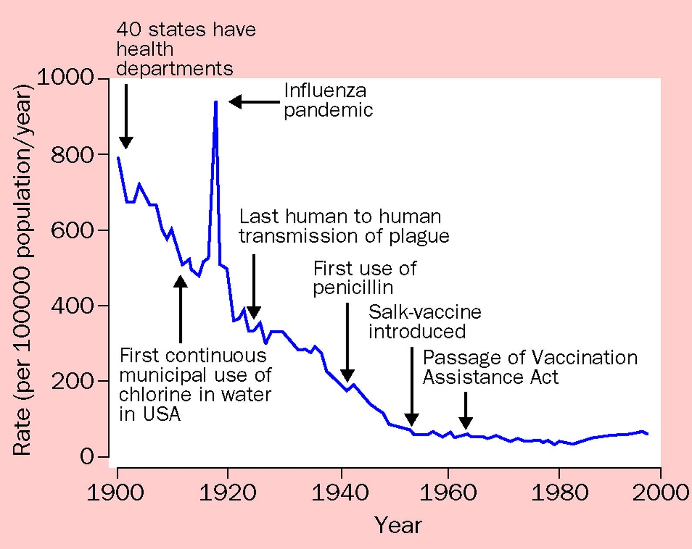
Fig 2.31 Infectious disease mortality in the USA, 1900–2000. Note when the curve falls: the steep decline begins with municipal chlorination and public health departments, decades before the first use of penicillin. Antibiotics accelerated a fall that sanitation had already begun.مرگومیر بیماریهای عفونی در آمریکا، ۱۹۰۰ تا ۲۰۰۰. به زمان افت منحنی توجه کنید: کاهش شدید با کلرزنی شهری و تأسیس ادارات بهداشت عمومی آغاز میشود، یعنی دههها پیش از نخستین کاربرد پنیسیلین. آنتیبیوتیکها افتی را شتاب دادند که بهداشت از پیش آغاز کرده بود.
The lecture closes with the three main determinants of our success in limiting infectious disease. They are worth memorising in order, because an MCQ asks which item in a list is not one of them:این درس با سه عامل اصلی موفقیت ما در مهار بیماریهای عفونی پایان مییابد. حفظکردن آنها به ترتیب ارزش دارد، چون یک سؤال چندگزینهای میپرسد کدام مورد در فهرست جزو آنها نیست:
Vaccination — from Jenner's cowpox to modern conjugate and mRNA vaccines.واکسیناسیون — از آبلهٔ گاوی جنر تا واکسنهای کونژوگه و mRNA امروزی.
Antibiotics — from Salvarsan and sulfonamides to the modern armamentarium.آنتیبیوتیکها — از سالوارسان و سولفونامیدها تا زرادخانهٔ امروزی.
Mnemonicیادیار
H-V-A — Hygiene, Vaccines, Antibiotics.Population is the classic distractor and is not a determinant of success — if anything, dense populations make transmission easier.H-V-A — Hygiene, Vaccines, Antibiotics (بهداشت، واکسن، آنتیبیوتیک). جمعیت گزینهٔ انحرافی کلاسیک است و عامل موفقیت نیست — اگر اثری داشته باشد، جمعیت متراکم انتقال را آسانتر میکند.
Exam Trap — who founded whatدام امتحانی — چه کسی چه رشتهای را بنیان گذاشت
The single most reliable MCQ in this lecture pairs a person with a field or process. Learn this list as a unit: Leeuwenhoek — first to see bacteria · Redi — disproved spontaneous generation · Jenner — first Western vaccine, father of immunology · Semmelweis — handwashing · Snow — epidemiology · Pasteur — pasteurization, fermentation, attenuated vaccines, father of microbiology · Koch — postulates, modern bacteriology · Lister — antisepsis · Ehrlich — chemotherapy · Domagk — sulfonamides · Fleming — penicillin · Linnaeus — taxonomy.قابلاعتمادترین سؤال چندگزینهای این درس، یک فرد را به یک رشته یا فرایند وصل میکند. این فهرست را یکجا یاد بگیرید: لیوِنهوک — نخستین مشاهدهٔ باکتری · ردی — رد خلقالساعه · جنر — نخستین واکسن غربی، پدر ایمنیشناسی · زملوایس — شستن دست · اسنو — اپیدمیولوژی · پاستور — پاستوریزاسیون، تخمیر، واکسن ضعیفشده، پدر میکروبشناسی · کخ — اصول کخ، باکتریشناسی نوین · لیستر — آنتیسپسیس · ارلیش — شیمیدرمانی · دوماگ — سولفونامیدها · فلمینگ — پنیسیلین · لینه — تاکسونومی.